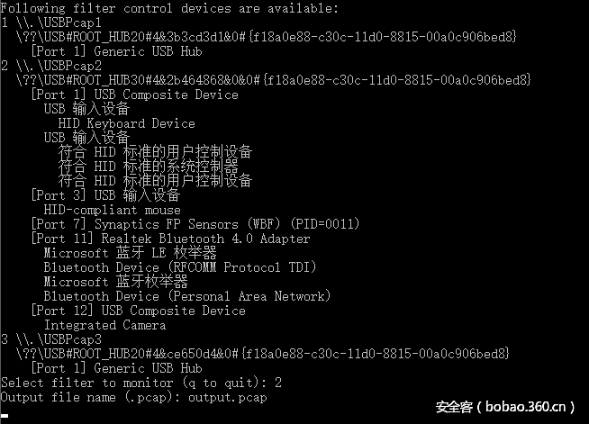
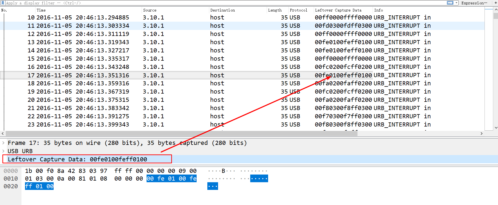
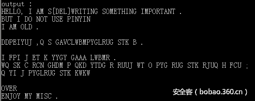
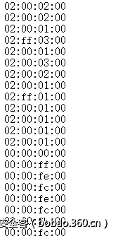
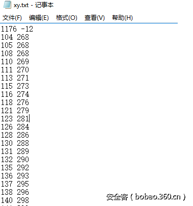
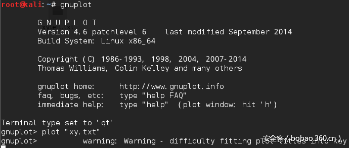
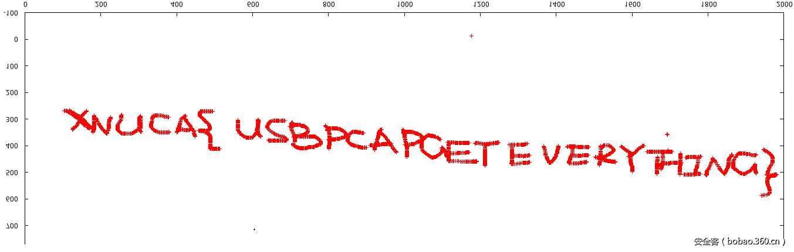

USB流量分析¶
USB capture¶
USB流量的捕获可以使用wireshark或者usbpcap来进行，最新版本的wireshark已经支持USB接口的捕获，且在安装时会提示usbpcap的安装，当前网上已有相关中文资料对wireshark抓取usb数据包的方法进行讲解，感兴趣的读者可阅读参考链接，在此我们使用一种相对简单的方式，即直接采用usbpcap捕获USB流量。该软件的下载地址为http://desowin.org/usbpcap/，可支持32位以及64位的winxp至win10操作系统，安装完成后须重启机器或者按照提示选择重启所有USB设备。
安装完成后，直接双击USBPcapCMD.exe，按照提示信息选择filter，输入文件名，便可愉快地等产生的信息被捕获了，程序运行界面如下图：

键盘流量解析¶
USB协议的数据部分在Leftover Capture Data域之中，右键leftover capture data –> 应用为列，可以将该域的值在主面板上显示，键盘数据包的数据长度为8个字节，击键信息集中在第3个字节，每次key stroke都会产生一个keyboard event usb packet ，如下图：

使用wireshark自带的tshark命令行工具，可以将 leftover capture data单独提取出来，具体命令为：
1 | tshark.exe -r usb1.pcap -T fields -e usb.capdata > usbdata.txt |
然后我们需要编写脚本从得出的userdata.txt文件中过滤出键盘击键相关的流量，并根据上述映射表，将键盘按键按照对应关系输出出来，这里附上简要的脚本：
1 2 3 4 5 6 7 8 9 10 11 12 13 14 15 16 17 | mappings = { 0x04:"A", 0x05:"B", 0x06:"C", 0x07:"D", 0x08:"E", 0x09:"F", 0x0A:"G", 0x0B:"H", 0x0C:"I", 0x0D:"J", 0x0E:"K", 0x0F:"L", 0x10:"M", 0x11:"N",0x12:"O", 0x13:"P", 0x14:"Q", 0x15:"R", 0x16:"S", 0x17:"T", 0x18:"U",0x19:"V", 0x1A:"W", 0x1B:"X", 0x1C:"Y", 0x1D:"Z", 0x1E:"1", 0x1F:"2", 0x20:"3", 0x21:"4", 0x22:"5", 0x23:"6", 0x24:"7", 0x25:"8", 0x26:"9", 0x27:"0", 0x28:"n", 0x2a:"[DEL]", 0X2B:" ", 0x2C:" ", 0x2D:"-", 0x2E:"=", 0x2F:"[", 0x30:"]", 0x31:"\", 0x32:"~", 0x33:";", 0x34:"'", 0x36:",", 0x37:"." } nums = [] keys = open('usbdata.txt') for line in keys: if line[0]!='0' or line[1]!='0' or line[3]!='0' or line[4]!='0' or line[9]!='0' or line[10]!='0' or line[12]!='0' or line[13]!='0' or line[15]!='0' or line[16]!='0' or line[18]!='0' or line[19]!='0' or line[21]!='0' or line[22]!='0': continue nums.append(int(line[6:8],16)) keys.close() output = "" for n in nums: if n == 0 : continue if n in mappings: output += mappings[n] else: output += '[unknown]' print 'output :n' + output |

鼠标流量解析¶
解决本题需要把鼠标流量还原出来，然而鼠标与键盘不同，鼠标移动时表现为连续性，与键盘击键的离散性不一样，不过实际上鼠标动作所产生的数据包也是离散的，毕竟计算机表现的连续性信息都是由大量离散信息构成的。
首先同样使用tshark 命令将cap data提取出来:
1 | tshark.exe -r usb2.pcap -T fields -e usb.capdata > usbdata.txt |

每一个数据包的数据区有四个字节，第一个字节代表按键，当取0x00时，代表没有按键、为0x01时，代表按左键，为0x02时，代表当前按键为右键。第二个字节可以看成是一个signed byte类型，其最高位为符号位，当这个值为正时，代表鼠标水平右移多少像素，为负时，代表水平左移多少像素。第三个字节与第二字节类似，代表垂直上下移动的偏移。
了解协议相关约定之后，可编写脚本将数据包的内容变成一系列点的集合，为了区分左右按键，可以特意对第一个字节的内容作一下判断。相关脚本如下：
1 2 3 4 5 6 7 8 9 10 11 12 13 14 15 16 17 18 19 | nums = [] keys = open('data.txt','r') posx = 0 posy = 0 for line in keys: if len(line) != 12 : continue x = int(line[3:5],16) y = int(line[6:8],16) if x > 127 : x -= 256 if y > 127 : y -= 256 posx += x posy += y btn_flag = int(line[0:2],16) # 1 for left , 2 for right , 0 for nothing if btn_flag == 1 : print posx , posy keys.close() |
本题的flag藏在右键信息中，当btn_flag 取2时，运行脚本可以得到一系列坐标点：

得到这些点之后，需要将他们画出来，因而需要辅以gnuplot 或者其他的绘图工具，gnuplot的命令为"plot inputfile"，运行如下：

